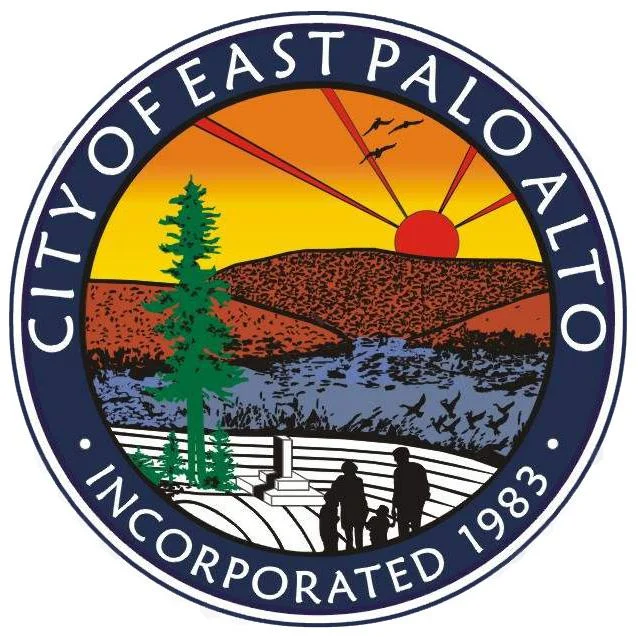

In collaboration with the City of East Palo Alto and EPA4Reparations, this partnership with the Cardinal Policy Group (CPG) will examine the historical injustices experienced by Descendant Americans – African Americans who are a descendent of a free Black person living in the US prior to the 19th century – in East Palo Alto, focusing on housing practices, the impact of neighboring cities and Stanford University, demographic analysis, and case studies. .

For most of its history, East Palo Alto was part of unincorporated San Mateo County. As such, it did not have an official boundary until it was incorporated in 1983. However, the area historically regarded as East Palo Alto was much larger than the city's current 2.5 square miles. The original inhabitants were Ohlone / Costanoan Native Americans. Spanish ranchers took over, followed by Caucasian speculators and settlers. For a time Chinese laborers were prevalent. Asian and Italian flower growers preceded the flood of middle-class Caucasians drawn to post-war housing developments. East Palo Alto later became the largest African American community on the peninsula. Today the city possesses a multi-ethnic population which includes a large number of Hispanics and Pacific Islanders.
EPA4Reparations represents a historically marginalized community grappling with systemic challenges. As Stanford students, we must acknowledge our privilege—being afforded the opportunity to engage in this project and being part of an institution that has contributed to a multitude of systemic barriers. We must recognize that our understanding of the lived experiences of the EPA4Reparations community may be limited. So, self-education, striving to bridge gaps in our awareness and acknowledging potential biases inherent in our perspectives is necessary. Our goal is to primarily amplify the voices of those we support and adapt our approach based on feedback and an evolving comprehension of the community's needs.